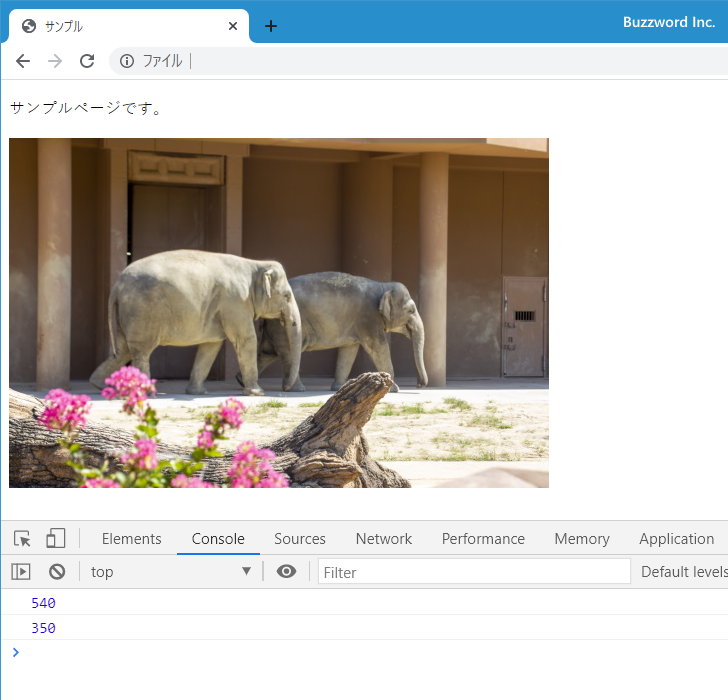
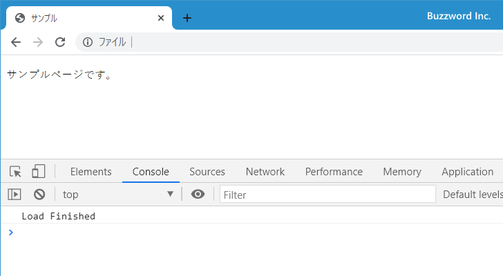

- Home ›
- JavaScript入門 ›
- イベント処理
loadイベント：ページの読み込みが完了したとき
load イベントは HTML ページに含まれる画像やスタイルシートなどすべてのリソースの読み込みが完了した時点で発生するイベントです。 onload プロパティに対してイベントハンドラを設定したり、 addEventListener メソッドの引数として load を指定してイベントリスナーを登録できます。ここでは JavaScript を使って load イベントが発生した場合の処理を記述する方法について解説します。
loadイベントの使い方
load イベントは HTML ページに含まれる画像やスタイルシートなどすべてのリソースの読み込みが完了した時点で発生するイベントです。 window オブジェクトで発生します。
イベントの種類 : Event バブリングの可否 : 不可 キャンセルの可否 : 不可
※ バブリングについては「イベントの伝搬(キャプチャリングとバブリング)」、キャンセルについては「イベントに対するデフォルトの動作をキャンセルする」を参照されてください。
window オブジェクトのプロパティにイベントハンドラを登録する場合は onload プロパティを使用します。プロパティを使用する場合は、無名関数またはアロー関数式を使って記述することもできます。(詳しくは「イベントハンドラを無名関数やアロー関数を使って記述する」を参照されてください)。
onload プロパティ
<script>
function loadFinished(){
alert('Load');
}
window.onload = loadFinished;
</script>
addEventListener メソッドを使ってイベントリスナーを登録する場合は、 1 番目の引数に 'load' を指定してください。 addEventListener メソッドを使用する場合は、無名関数またはアロー関数式を使って記述することもできます。(詳しくは「addEventListenerメソッドを使ってイベントリスナーを登録する」を参照されてください)。
addEventListener メソッド
<script>
function loadFinished(){
alert('Load');
}
window.addEventListener('load', loadFinished);
</script>
要素に対してプロパティへイベントハンドラを登録した場合と、 addEventListener メソッドを使ってイベントリスナーを登録した場合、イベントが発生してイベントハンドラやイベントリスナーが呼び出されるとき、引数として発生したイベントに関する情報が含まれる Event オブジェクトが渡されてきます。 load イベントの場合は Event オブジェクトが渡されてきます。
<script>
function loadFinished(event){
console.log(event);
}
window.addEventListener('load', loadFinished);
</script>
イベントハンドラやイベントリスナーの中で渡されてきた Event オブジェクトのプロパティなどを参照することで、発生したイベントに関する情報を参照できます。
次のサンプルを見てください。
<!DOCTYPE html>
<html lang="ja">
<head>
<meta charset="UTF-8">
<title>サンプル</title>
<script>
function loadFinished(){
let zooImg = document.getElementById('zoo');
console.log(zooImg.naturalWidth);
console.log(zooImg.naturalHeight);
}
window.addEventListener('load', loadFinished);
</script>
</head>
<body>
<p>サンプルページです。</p>
<img src="zoo.jpg" id="zoo">
</body>
</html>
HTML ページへアクセスしたあと、ページに含まれるリソースの読み込みがすべて完了すると load イベントが発生しイベントリスナーが呼び出されます。 load イベントが発生した時点でページに含まれる画像の読み込みもすべて完了しているので、画像の幅と高さの情報を取得してコンソールに出力しています。

bodyタグのonload属性を使う
body タグの onload 属性にイベントハンドラを登録することで、 window オブジェクトの load イベントと同じように HTML ページのすべてのリソースの読み込みが完了するとイベントハンドラが呼び出されます。
onload 属性
<head>
<script>
function loadFinished(){
alert('Load');
}
</script>
</head>
<body onload = loadFinished()>
・・・
</body>
window オブジェクトの onload プロパティと body タグの onload 属性の両方にイベントハンドラを登録した場合、あとから登録された方のイベントハンドラのみ呼び出されるのでこの二つは内部的には同じものと考えられます。(イベントリスナーと異なりイベントハンドラは一つしか登録できず、複数登録した場合は最後に登録したものが有効となるため)。
次のサンプルを見てください。
<!DOCTYPE html>
<html lang="ja">
<head>
<meta charset="UTF-8">
<title>サンプル</title>
<script>
function loadFinished(){
console.log('Load Finished');
}
</script>
</head>
<body onload="loadFinished()">
<p>サンプルページです。</p>
</body>
</html>
HTML ページへアクセスしたあと、ページに含まれるリソースの読み込みがすべて完了するとコンソールに 'Load Finished' と出力されます。

DOMContentLoadedイベントとloadイベントの違い
window オブジェクトの load イベントと似ているイベントに document オブジェクトの DOMContentLoaded イベントがあります。
HTML ページのダウンロードが完了したあと、 HTML を解析して DOM ツリーを作成します。この時点で DOMContentLoaded イベントが発生します。
DOMContentLoaded イベントが発生したあと、画像やスタイルシートなどの HTML ページのリソースの読み込みがすべて完了すると load イベントが発生します。このため、順番としては DOMContentLoaded イベントが発生したあとに load イベントが発生します。 DOM を使った要素に対する操作は load イベントが発生するよりも前の DOMContentLoaded イベントが発生した時点で行った方が適切な場合があります。
※ DOMContentLoaded イベントについては「DOMツリーの構築完了時の処理(DOMContentLoadedイベント)」を参照されてください。
次のサンプルを見てください。
<!DOCTYPE html>
<html lang="ja">
<head>
<meta charset="UTF-8">
<title>サンプル</title>
<script>
window.addEventListener('load', function(){
console.log('Load');
});
document.addEventListener('DOMContentLoaded', function(){
console.log('DOMContentLoaded');
});
</script>
</head>
<body>
<p>サンプルページです。</p>
</body>
</html>
load イベントに対するイベントリスナーと DOMContentLoaded イベントに対するイベントリスナーの両方を登録しています。 HTML ページへアクセスすると、まず DOMContentLoaded イベントが発生したあと load イベントが発生していることが確認できます。
-- --
JavaScript を使って load イベントが発生した場合の処理を記述する方法について解説しました。
( Written by Tatsuo Ikura )

著者 / TATSUO IKURA
初心者～中級者の方を対象としたプログラミング方法や開発環境の構築の解説を行うサイトの運営を行っています。